[ Overview | Download | Documentation | Publications | Showcases | Contributors Legal Notice ]
Overview
HONEI is an open-source collection of libraries offering a hardware oriented approach to numerical calculations.HONEI abstracts the hardware, and applications written on top of HONEI can be executed on a wide range of computer architectures such as common CPUs, GPUs and the Cell processor.
An important aspect of our approach is that the full performance capabilities of the hardware under consideration can be exploited by implementing optimised application-specific operations on top of HONEIs libraries.
HONEI provides all necessary infrastructure for and significantly simplifies the development and evaluation of such kernels.
Additionally, HONEI implements typical numerical operations on vectors and matrices being a basis for many high-level algorithms.
Download
The latest stable version can be downloaded either as zip or tar formats.
Currently, our master branch can be accessed via GitHub.
Documentation
We have written a tutorial on how to use HONEI.
The README file explains how to install HONEI.
Publications
Paper
- HONEI: A collection of libraries for numerical computations targeting multiple processor architectures
- Lattice-Boltzmann Simulation of the Shallow-Water Equations with Fluid-Structure Interaction on Multi- and Manycore Processors
- Improved Scalability By Using Hardware-Aware Thread Affinities
- Performance and Accuracy of Lattice-Boltzmann Kernels on Multi- and Manycore Architectures
- A Simulation Suite for Lattice-Boltzmann based Real-Time CFD Applications Exploiting Multi-Level Parallelism on modern Multi- and Many-Core Architectures
- Efficient Finite Element Geometric Multigrid Solvers for Unstructured Grids on GPUs
- Towards a complete FEM-based simulation toolkit on GPUs: Geometric multigrid solvers
Talks
- A brief introduction to the (standard) Lattice-Boltzmann Method and the HONEI approach
- Hardware oriented numerics for real-time CFD applications on parallel hardware architectures
- Lattice-Boltzmann Simulation of the Shallow-Water Equations with Fluid-Structure Interaction on Multi- and Many-core Processors
- Performance and Accuracy of Lattice-Boltzmann Kernels on Multi- and Manycore Architectures
- Efficient Finite Element Geometric Multigrid Solvers for Unstructured Grids on Graphics Processing Units
Showcases
Graph drawing with weighted fruchterman rheingold algorithm:
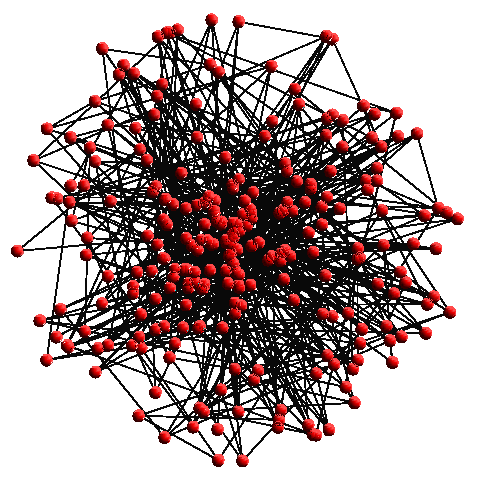 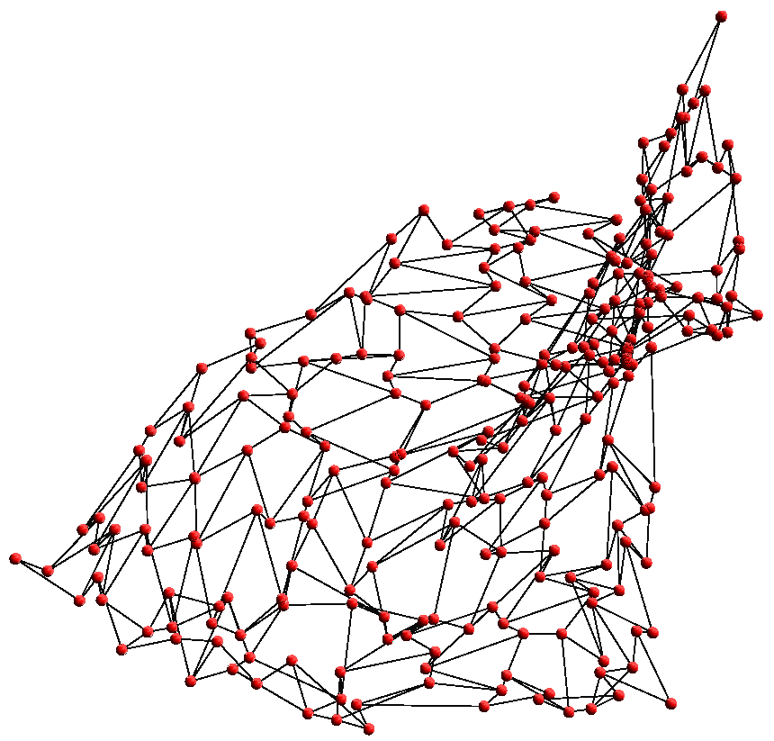 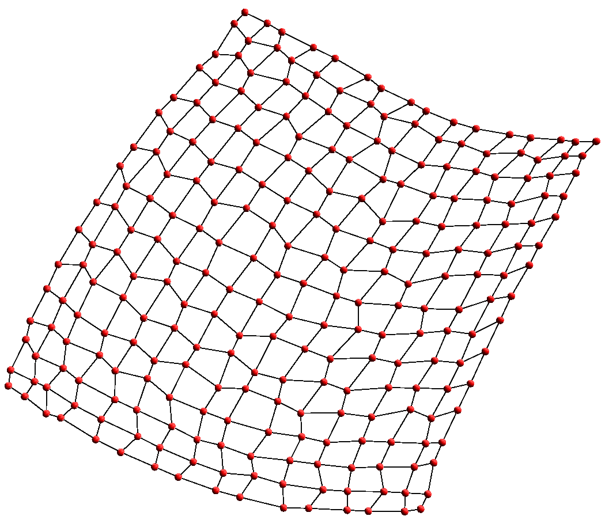 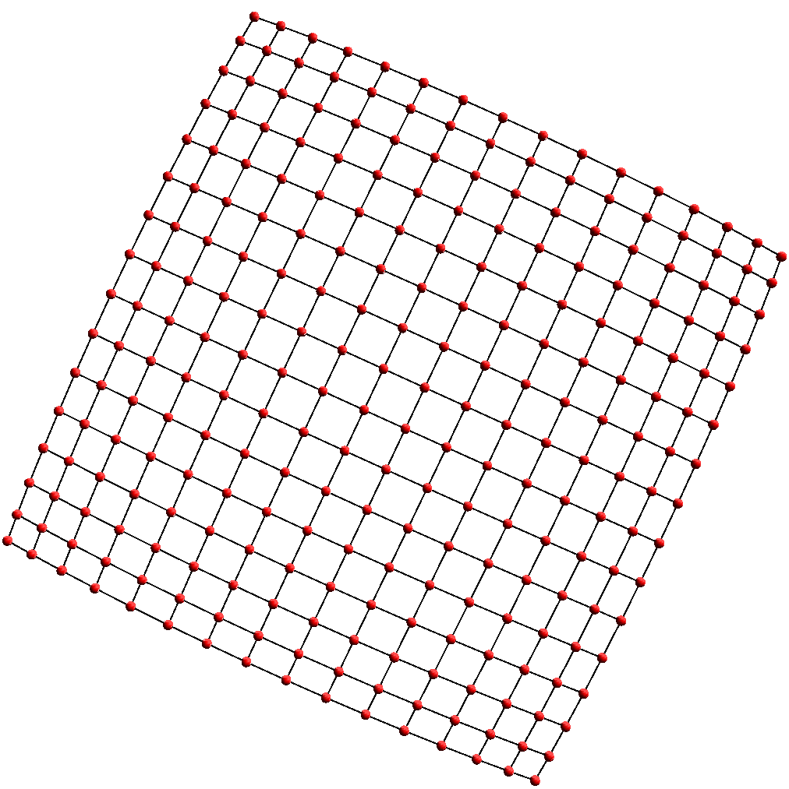
Relax Solver - interfering wave fronts:
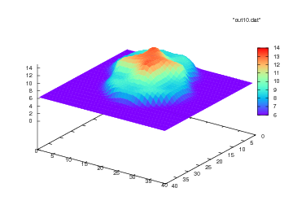 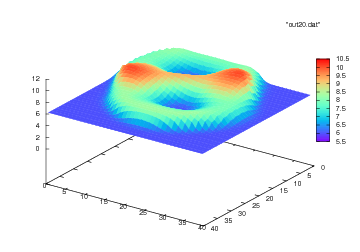 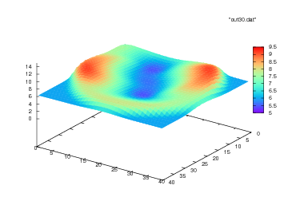
LBM Solver - partial dam break from a higher reservour to a lower dry area:
 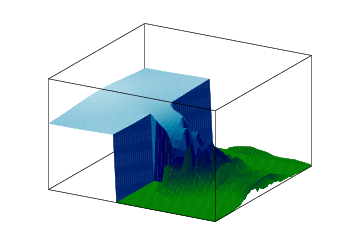
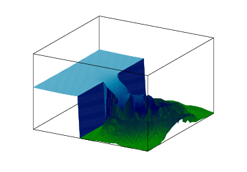
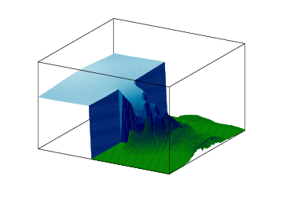
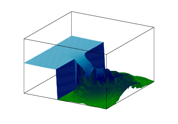
Contributors
Danny van Dyk (danny.dyk{replace with AT}tu-dortmund.de)
Markus Geveler (markus.geveler{replace with AT}math.tu-dortmund.de)
Dominik Göddeke (dominik.goeddeke{replace with AT}math.tu-dortmund.de)
Sven Mallach (mallach{replace with AT}honei.org)
Dirk Ribbrock (dirk.ribbrock{replace with AT}math.tu-dortmund.de)
Legal Notice
(this is to satisfy German § 55 I RStV): Markus Geveler, Charlottenstr. 74, 42105 Wuppertal, Germany, admin{replace with AT - ersetze mit AT}honei.org